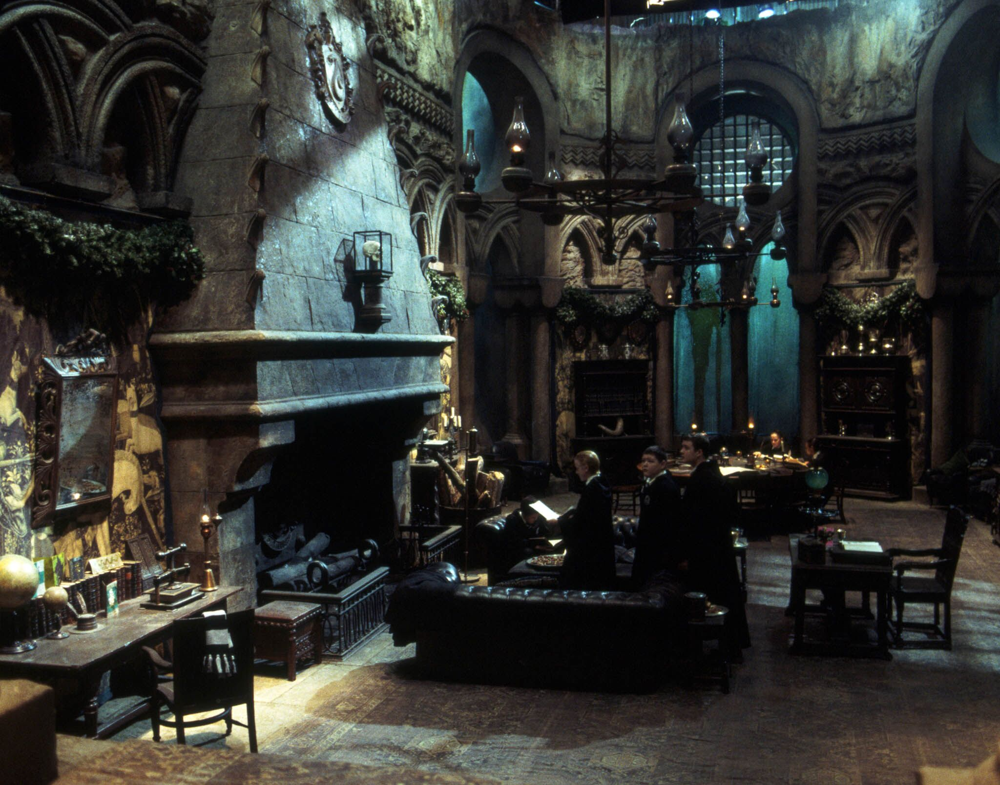
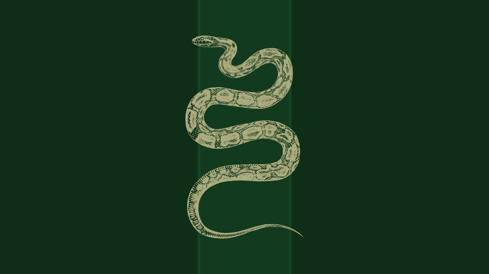

House of Slytherin
OUR GREATEST WIZARDS
What is Slytherin?
Slytherin is one of the four Houses at Hogwarts School of Witchcraft and Wizardry,
founded
by Salazar Slytherin.
In establishing the house, Salazar instructed the Sorting Hat to pick students who
had a
few particular characteristics he most valued.
Those characteristics include cunning, resourcefulness, leadership,
ambition and self-preservation.
Many Slytherin students tend to clique together, often acquiring leaders,
which further exemplifies Slytherin's ambitious qualities.
Another characteristic some Slytherins share is a tendency towards deep, unrequited love.
The Bloody Baron held abiding but unreturned feelings for Helena Ravenclaw.
The founder highly valued and favoured Pure-blood students and the Sorting
Hat
admitted that it can be a factor when being sorted.
Students of any blood status can be placed in the house. However, a Muggle-Born student from that
house is considered to be quite rare.
The emblematic animal of the house is a snake and the house's colours are
green
and silver.
Slytherin corresponds roughly with the element of water due to serpents being
commonly
associated with the sea and lochs in western European mythology,
as well as serpents being physically fluid and flexible animals. Similarly, in Celtic mythology, water is
seen as
a portal to another world,
leading some to speculate that the element was chosen to symbolise many Slytherins' hope for a
pure-blood only community.
The colours also correspond with waters around lakes and lochs often being green, and
silver
being often associated with grey rainwater.
Where is Slytherin?
The Slytherin Common Room is located near the dungeons and can be found by following
the
signs at the bottom of The Grand Staircase.
Walk down a couple flights of stairs turning right and you should see Slytherin Banners to your
left.

How is Slytherin?
What a strange question! We are the best!

History
Slytherin's opposition over the idea to allow witches and wizards from Half-blood
and
Muggle-born heritage
to enrol at Hogwarts during its foundation created great controversy at the school and
it
was the root of a feud between former friends Slytherin and Godric Gryffindor.
Slytherin later decided to leave the school when an argument started between
him
and Gryffindor, and they either duelled or started a civil war between the two
houses
.
Such an argument would be forever known as the origin of the feud between their two houses and
also
made them the houses that are most competitive.
When Slytherin departed Hogwarts, he would leave behind the Chamber of Secrets
with the purpose of an heir opening the chamber one day and unleashing a
means
of purging
the school of those who, in his view, were unworthy to study magic: Muggle-borns